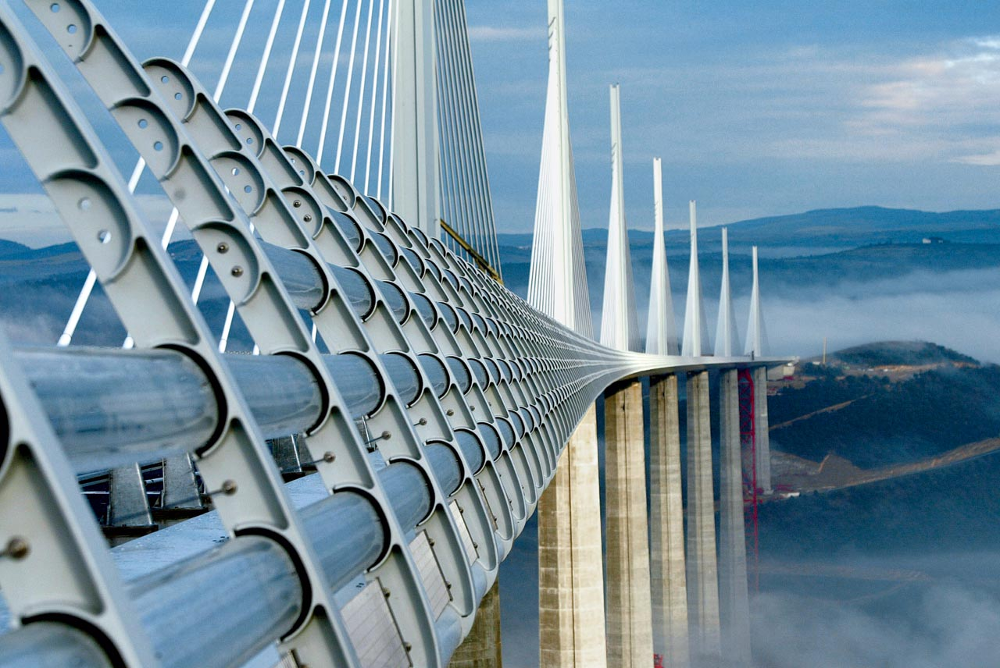

His Works and sketches
These are the well known works of him.
- London City Hall
- As one of the most important buildings raised by Foster + Partners in the past 20 years, the London City Hall was designed with democratic principals in mind.
- As a largely glass structure, the democratic ideals of transparency and accessibility are conveyed in the building’s innovative, oval design. Intended to maximize shading, this building uses about a quarter of the energy consumed by a standard London office building, despite playing host to over 15,000 employees.
- Zayed National Museum
- The Zayed National Museum, designed by Lord Norman Foster, tells the story of the late Sheikh Zayed bin Sultan Al Nahyan (1918-2004), and his unification of the United Arab Emirates, the long history of the region and its cultural connections across the world.
- Millau Viaduct
- Bridges are often considered to belong to the realm of the engineer rather than that of the architect. But the architecture of infrastructure has a powerful impact on the environment and the Millau Viaduct, designed in close collaboration with structural engineers, illustrates how the architect can play an integral role in the design of bridges.
- Located in southern France, the bridge completes a hitherto missing link in the A75 autoroute from Clermont-Ferrand to Béziers across the Massif Central.
- Here are some of his sketches


